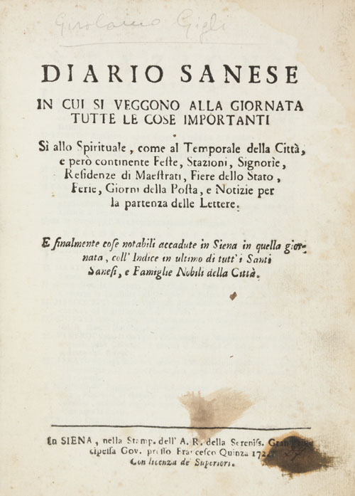
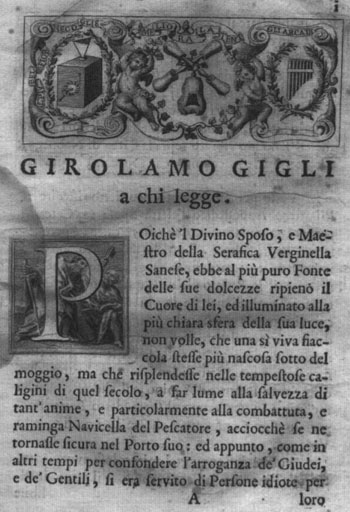

Nato nella famiglia senese dei Nenci, fu però adottato da un prozio, dal quale prese il cognome.
Gigli si sposò giovane con Laurenzia Perfetti, dalla quale ebbe dodici figli.
Nel 1698 insegnò presso l'Università di Pavia e successivamente in quella di Siena (professore di Lettere Toscane).
Fu abituale frequentatore dell'Accademia degli Intronati (ne divenne anche segretario), usando il soprannome L'Economico.
Per quanto concerne le sue opere,
riprese i modi della commedia francese, risolvendoli in un vivace e spontaneo umorismo.
Ad esempio Il Don Pilone, ovvero il bacchettone falso (1711) è un adattamento de Il Tartufo di Molière.
Qui Gigli utilizza il linguaggio senese, riuscendo a compiere un'operazione di satira arguta nei confronti di noti personaggi cittadini dell'epoca.

Si ricorda anche La sorellina di don Pilone (1712), nella quale Gigli prese in giro la sua stessa famiglia, in particolar modo la propria moglie.
Degli stessi anni sono Il Gazzettino e Avvisi ideali, nelle quali vengono derisi personaggi legati al mondo accademico, religioso e cortigiano.
Oltre alle commedie, scrisse anche circa quaranta componimenti musicali. Tradusse inoltre due tragedie di Corneille, Nicomède e Horace, e scrisse un'opera di suo pugno, Il Balduino, fingendola anch'essa una traduzione del celebre autore francese.
Gigli si occupò di ricerche storiche e linguistiche. In ambito storico la sua opera più rilevante è il Diario Senese (o Sanese), opera in due volumi pubblicata postuma nel 1723 dal figlio Ludovico.
Nel Diario, Gigli ha raccolto «insigni cose sacre e profane che illustrassero gli annali di Siena», ordinate giorno per giorno; sono pertanto numerose le notizie storiche, riferite ai secoli precedenti, riguardanti i costumi, le tradizioni, e le istituzioni di Siena.
Nel 1717 pubblicò tutti gli scritti di Santa Caterina da Siena, infarcendoli però di linguaggio buffo e burlonesco: il cosiddetto Vocabolario Cateriniano. Questa messa in discussione della lingua fiorentina, in aggiunta alla sua opinione riguardante la superiorità del senese sul fiorentino, contribuì a far nascere la polemica con l'Accademia della Crusca, dalla quale fu espulso.
Gigli non sconfessò mai le sue opinioni linguistiche, e fu perciò mandato in esilio, su pressione della stessa Accademia della Crusca.
Il suo Vocabolario Cateriniano fu bruciato a Firenze in Piazza Sant'Apollinare, il 9 settembre 1717.

prima pagina dell'edizione originale
del Vocabolario Cateriniano
Gigli dovette spostarsi prima a Viterbo e poi a Roma, prima di tornare nuovamente a Siena nel periodo finale della propria vita.
Finito però in disgrazia economica e sociale, decise di ritornare a Roma, dove morì il 4 gennaio 1722.

 ACCADDE OGGI
ACCADDE OGGI